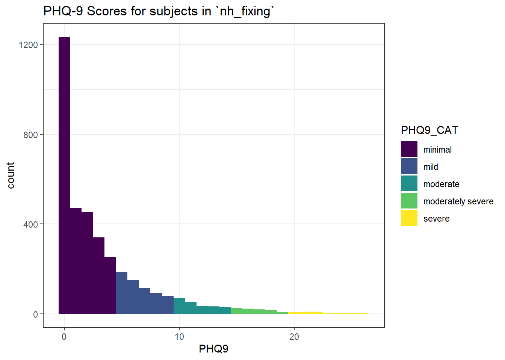

knitr::opts_chunk$set(comment = NA)
library(janitor)
library(gt)
library(gtsummary)
library(Hmisc)
library(naniar)
library(nhanesA)
library(tidyverse)
theme_set(theme_bw())1 Building the nh432 example
In this Chapter, we will extract and tidy a data set using pre-pandemic (2017 - March 2020) data from the National Health and Nutrition Examination Survey (NHANES). Then we’ll save this data set (which I’ll call nh432 once it’s built) so that we can use it again in subsequent work. Details on the data are available at this link to NHANES at CDC.
1.1 R Setup
1.2 Selecting NHANES Variables
We’ll focus on NHANES data describing
- participating adults ages 30-59 years who
- completed both an NHANES interview and medical examination, and who
- also completed an oral health examination, and who
- also reported their overall health as either Excellent, Very Good, Good, Fair, or Poor
We will pull the following NHANES data elements using the nhanesA package:
1.2.1 Demographics and Sample Weights
From the Demographic Variables and Sample Weights database (P_DEMO), we collect the following variables.
| Variable | Description | Values |
|---|---|---|
| SEQN | Respondent Sequence Number (participant ID) |
link across databases |
| RIDSTATR | Interview and MEC exam status | 1 = Interviewed only 2 = Interviewed & MEC examined |
| RIDAGEYR | Age at screening (years) We will require ages 30-59. |
Top coded at 801 |
| RIDRETH3 | Race/Hispanic origin | 1 = Mexican American 2 = Other Hispanic 3 = Non-Hispanic White 4 = Non-Hispanic Black 6 = Non-Hispanic Asian 7 = Other Race, including Multi-Racial |
| DMDEDUC2 | Education Level | 1 = Less than 9th grade 2 = 9-11th grade 3 = High school graduate 4 = Some college or AA 5 = College graduate or above 7 = Refused (will treat as NA) 9 = Don’t Know (will treat as NA) |
| RIAGENDR | Sex | 1 = Male, 2 = Female |
| WTINTPRP | Full sample interview weight | Sampling weight |
| WTMECPRP | Full sample MEC examination weight | Sampling weight |
Note As part of our inclusion criteria, we will require that all participants in our analytic data have RIDAGEYR values of 30-59 and thus drop the participants whose responses to that item are missing or outside that range.
Here’s my code to select these variables from the P_DEMO data.
p_demo <- nhanes('P_DEMO') |>
select(SEQN, RIDSTATR, RIDAGEYR, RIDRETH3, DMDEDUC2, RIAGENDR,
WTINTPRP, WTMECPRP)
dim(p_demo) # gives number of rows (participants) and columns (variables)[1] 15560 8Do we have any duplicate SEQN values?
p_demo |> get_dupes(SEQN)No duplicate combinations found of: SEQN[1] SEQN dupe_count RIDSTATR RIDAGEYR RIDRETH3 DMDEDUC2 RIAGENDR
[8] WTINTPRP WTMECPRP
<0 rows> (or 0-length row.names)Good.
1.2.2 Oral Health
From the Oral Health - Recommendation of Care (P_OHXREF), we collect the following variables.
| Variable | Description | Values |
|---|---|---|
| SEQN | Respondent Sequence Number (participant ID) |
link across databases |
| OHDEXSTS | Overall Oral Health Exam Status | 1 = Complete 2 = Partial 3 = Not Done |
| OHAREC | Overall Recommendation for Dental Care | 1 = See a dentist immediately 2 = See a dentist within the next 2 weeks 3 = See a dentist at your earliest convenience 4 = Continue your regular routine care |
Note In addition to requiring that all participants in our analytic data have OHDEXSTS = 1, we will (later) collapse values 1 and 2 in OHAREC because there are only a few participants with code 1 in OHAREC.
Here’s my code to select these variables from the P_OHXREF data.
p_ohxref <- nhanes('P_OHXREF') |>
select(SEQN, OHDEXSTS, OHAREC)
dim(p_ohxref)[1] 13772 31.2.3 Hospital Utilization & Access to Care
From the Questionnaire on Hospital Utilization & Access to Care (P_HUQ) we collect the following variables.
| Variable | Description | Values |
|---|---|---|
| SEQN | Respondent Sequence Number (participant ID) |
link across databases |
| HUQ010 | General health condition we require a 1-5 response |
1 = Excellent 2 = Very Good 3 = Good 4 = Fair 5 = Poor 7 = Refused (to be dropped) 9 = Don’t Know (to be dropped) |
| HUQ071 | Overnight hospital patient in past 12 months | 1 = Yes, 2 = No 7 = Refused (will treat as NA) 9 = Don’t Know (will treat as NA) |
| HUQ090 | Seen mental health professional in past 12 months | 1 = Yes, 2 = No 7 = Refused (will treat as NA) 9 = Don’t Know (will treat as NA) |
Note As part of our inclusion criteria, we will require that all participants in our analytic data have HUQ010 values of 1-5 and drop participants whose responses are missing, Refused or Don’t Know for that item.
Here’s my code to select these variables from the P_HUQ data.
p_huq <- nhanes('P_HUQ') |>
select(SEQN, HUQ010, HUQ071, HUQ090)
dim(p_huq)[1] 15560 41.2.4 Body Measures
From the Body Measures database (P_BMX), we collect the following variables.
| Variable | Description | Values |
|---|---|---|
| SEQN | Respondent Sequence Number (participant ID) |
link across databases |
| BMXWT | Body weight (kg) | Measured in examination |
| BMXHT | Standing height (cm) | Measured in examination |
| BMXWAIST | Waist Circumference (cm) | Measured in examination |
Here’s my code to select these variables from the P_BMX data.
p_bmx <- nhanes('P_BMX') |>
select(SEQN, BMXWT, BMXHT, BMXWAIST)
dim(p_bmx)[1] 14300 41.2.5 Blood Pressure
From the Blood Pressure - Oscillometric Measurement (P_BPXO), we collect the following variables.
| Variable | Description | Values |
|---|---|---|
| SEQN | Respondent Sequence Number (participant ID) |
link across databases |
| BPXOSY2 | Systolic BP (2nd reading, in mm Hg) |
Measured in examination |
| BPXODI2 | Diastolic BP (2nd reading, in mm Hg) |
Measured in examination |
| BPXOPLS1 | Pulse (1st reading, beats/minute) |
Measured in examination |
| BPXOPLS2 | Pulse (2nd reading, beats/minute) |
Measured in examination |
- A “normal” blood pressure for most adults is < 120 systolic and < 80 diastolic.
- A “normal” resting pulse rate for most adults is between 60 and 100 beats/minute.
Here’s my code to select these variables from the P_BPXO data.
p_bpxo <- nhanes('P_BPXO') |>
select(SEQN, BPXOSY2, BPXODI2, BPXOPLS1, BPXOPLS2)
dim(p_bpxo)[1] 11656 51.2.6 Complete Blood Count
From the Complete Blood Count with 5-Part Differential in Whole Blood (P_CBC), we collect the following variables.
| Variable | Description | Values |
|---|---|---|
| SEQN | Respondent Sequence Number (participant ID) |
link across databases |
| LBXWBCSI | White blood cell count in 1000 cells/uL |
normal range: 4.5 - 11 |
| LBXPLTSI | Platelet count in 1000 cells/uL |
normal range: 150-450 |
Here’s my code to select these variables from the P_CBC data.
p_cbc <- nhanes('P_CBC') |>
select(SEQN, LBXWBCSI, LBXPLTSI)
dim(p_cbc)[1] 13772 31.2.7 C-Reactive Protein
From the High-Sensitivity C-Reactive Protein (P_HSCRP) we collect the following variables.
| Variable | Description | Values |
|---|---|---|
| SEQN | Respondent Sequence Number (participant ID) |
link across databases |
| LBXHSCRP | High-Sensitivity C-Reactive Protein (mg/L) |
normal range: 1.0 - 3.0 |
Here’s my code to select these variables from the P_HSCRP data.
p_hscrp <- nhanes('P_HSCRP') |>
select(SEQN, LBXHSCRP)
dim(p_hscrp)[1] 13772 21.2.8 Alcohol Use
From the Questionnaire on Alcohol Use (P_ALQ) we collect the following variables.
| Variable | Description | Values |
|---|---|---|
| SEQN | Respondent Sequence Number (participant ID) |
link across databases |
| ALQ111 | Ever had a drink of alcohol? | 1 = Yes, 2 = No 7 = Refused (treat as NA) 9 = Don’t Know (treat as NA) |
| ALQ130 | Average drinks per day in past 12 months (Top coded at 152) |
count (set to 0 if ALQ111 is No) 777 = Refused (treat as NA) 999 = Don’t Know (treat as NA) |
Here’s my code to select these variables from the P_ALQ data.
p_alq <- nhanes('P_ALQ') |>
select(SEQN, ALQ111, ALQ130)
dim(p_alq)[1] 8965 3As noted above, we set the value of ALQ130 to be 0 if the response to ALQ111 is 2 (No).
p_alq <- p_alq |>
mutate(ALQ130 = ifelse(ALQ111 == 2, 0, ALQ130))
p_alq |> count(ALQ130, ALQ111) ALQ130 ALQ111 n
1 0 2 867
2 1 1 2126
3 2 1 1769
4 3 1 843
5 4 1 431
6 5 1 231
7 6 1 201
8 7 1 44
9 8 1 65
10 9 1 13
11 10 1 42
12 11 1 3
13 12 1 53
14 13 1 3
15 15 1 29
16 777 1 1
17 999 1 9
18 NA 1 1640
19 NA NA 5951.2.9 Dermatology
From the Questionnaire on Dermatology (P_DEQ) we collect the following variables.
| Variable | Description | Values |
|---|---|---|
| SEQN | Respondent Sequence Number (participant ID) |
link across databases |
| DEQ034D | Use sunscreen if outside on very sunny day? | 1 = Always 2 = Most of the time 3 = Sometimes 4 = Rarely 5 = Never 7 = Refused (treat as NA) 9 = Don’t Know (treat as NA) |
Here’s my code to select these variables from the P_DEQ data.
p_deq <- nhanes('P_DEQ') |>
select(SEQN, DEQ034D)
dim(p_deq)[1] 5810 21.2.10 Depression Screener
From the Questionnaire on Mental Health - Depression Screener (P_DPQ) we collect the following variables.
| Variable | Description | Values |
|---|---|---|
| SEQN | Respondent Sequence Number (participant ID) |
link across databases |
| DPQ010 | Have little interest in doing things | 0-3: codes below |
| DPQ020 | Feeling down, depressed or hopeless | 0-3: codes below |
| DPQ030 | Trouble sleeping or sleeping too much | 0-3: codes below |
| DPQ040 | Feeling tired or having little energy | 0-3: codes below |
| DPQ050 | Poor appetite or overeating | 0-3: codes below |
| DPQ060 | Feeling bad about yourself | 0-3: codes below |
| DPQ070 | Trouble concentrating on things | 0-3: codes below |
| DPQ080 | Moving or speaking slowly or too fast | 0-3: codes below |
| DPQ090 | Thoughts you would be better off dead | 0-3: codes below |
| DPQ100 | Difficulty these problems have caused | 0-3: codes below |
- For DPQ010 - DPQ090, the codes are 0 = Not at all, 1 = Several days in the past two weeks, 2 = More than half the days in the past two weeks, 3 = Nearly every day in the past two weeks, with 7 = Refused and 9 = Don’t Know which we will treat as NA.
- For DPQ100, the codes are 0 = Not at all difficult, 1 = Somewhat difficult, 2 = Very difficult, 3 = Extremely difficult, with 7 = Refused and 9 = Don’t Know which we will treat as NA. Also, the DPQ100 score should be 0 if the scores on DPQ010 through DPQ090 are all zero.
Later, we will sum the scores in DPQ010 - DPQ090 to produce a PHQ-9 score for each participant.
Here’s my code to select these variables from the P_DPQ data.
p_dpq <- nhanes('P_DPQ') # we're actually pulling all available variables
dim(p_dpq)[1] 8965 111.2.11 Diet Behavior
From the Questionnaire on Diet Behavior and Nutrition (P_DBQ) we collect the following variables.
| Variable | Description | Values |
|---|---|---|
| SEQN | Respondent Sequence Number (participant ID) |
link across databases |
| DBQ700 | How healthy is your diet? | 1 = Excellent 2 = Very Good 3 = Good 4 = Fair 5 = Poor 7 = Refused (treat as NA) 9 = Don’t Know (treat as NA) |
Here’s my code to select these variables from the P_DBQ data.
p_dbq <- nhanes('P_DBQ') |>
select(SEQN, DBQ700)
dim(p_dbq)[1] 15560 21.2.12 Food Security
From the Questionnaire on Food Security (P_FSQ) we collect the following variables.
| Variable | Description | Values |
|---|---|---|
| SEQN | Respondent Sequence Number (participant ID) |
link across databases |
| FSDAD | Adult food security category for last 12m | 1 = Full food security 2 = Marginal 3 = Low 4 = Very low |
Here’s my code to select these variables from the P_FSQ data.
p_fsq <- nhanes('P_FSQ') |>
select(SEQN, FSDAD)
dim(p_fsq)[1] 15560 21.2.13 Health Insurance
From the Questionnaire on Health Insurance (P_HIQ) we collect the following variables.
| Variable | Description | Values |
|---|---|---|
| SEQN | Respondent Sequence Number (participant ID) |
link across databases |
| HIQ011 | Covered by health insurance now? | 1 = Yes, 2 = No 7 = Refused (treat as NA) 9 = Don’t Know (treat as NA) |
| HIQ210 | Time when no insurance in past year? | 1 = Yes, 2 = No 7 = Refused (treat as NA) 9 = Don’t Know (treat as NA) (set to Yes if HIQ011 is No.) |
Here’s my code to select these variables from the P_HIQ data.
p_hiq <- nhanes('P_HIQ') |>
select(SEQN, HIQ011, HIQ210)
dim(p_hiq)[1] 15560 3As noted above, we set the value of HIQ210 to be 1 (Yes) if HIQ011 is 2 (No).
p_hiq <- p_hiq |>
mutate(HIQ210 = ifelse(HIQ011 == 2, 1, HIQ210))
p_hiq |> count(HIQ210, HIQ011) HIQ210 HIQ011 n
1 1 1 960
2 1 2 1852
3 2 1 12682
4 7 1 2
5 9 1 25
6 NA 1 2
7 NA 7 8
8 NA 9 291.2.14 Medical Conditions
From the Questionnaire on Medical Conditions (P_MCQ) we collect the following variables.
| Variable | Description | Values |
|---|---|---|
| SEQN | Respondent Sequence Number (participant ID) |
link across databases |
| MCQ366A | Doctor told you to control/lose weight in the past 12 months? | 1 = Yes, 2 = No 7 = Refused (treat as NA) 9 = Don’t Know (treat as NA) |
| MCQ366B | Doctor told you to exercise in the past 12 months? |
1 = Yes, 2 = No 7 = Refused (treat as NA) 9 = Don’t Know (treat as NA) |
| MCQ371A | Are you now controlling or losing weight? | 1 = Yes, 2 = No 7 = Refused (treat as NA) 9 = Don’t Know (treat as NA) |
| MCQ371B | Are you now increasing exercise? | 1 = Yes, 2 = No 7 = Refused (treat as NA) 9 = Don’t Know (treat as NA) |
Here’s my code to select these variables from the P_MCQ data.
p_mcq <- nhanes('P_MCQ') |>
select(SEQN, MCQ366A, MCQ366B, MCQ371A, MCQ371B)
dim(p_mcq)[1] 14986 51.2.15 Oral Health
From the Questionnaire on Oral Health (P_OHQ) we collect the following variables.
| Variable | Description | Values |
|---|---|---|
| SEQN | Respondent Sequence Number (participant ID) |
link across databases |
| OHQ870 | Days using dental floss (in the last week) |
count (0-7) 9 = Unknown (treat as NA) 99 = Don’t Know (treat as NA) |
Here’s my code to select these variables from the P_OHQ data.
p_ohq <- nhanes('P_OHQ') |>
select(SEQN, OHQ870)
dim(p_ohq)[1] 14986 21.2.16 Physical Activity
From the Questionnaire on Physical Activity (P_PAQ) we collect the following variables.
| Variable | Description | Values |
|---|---|---|
| SEQN | Respondent Sequence Number (participant ID) |
link across databases |
| PAQ605 | Vigorous work activity for 10 min/week? | 1 = Yes, 2 = No 7 = Refused (treat as NA) 9 = Don’t Know (treat as NA) |
| PAQ610 | # of days of vigorous work activity in past week |
count (1-7) 77 = Refused (treat as NA) 99 = Don’t Know (treat as NA) (set to 0 if PAQ605 is No.) |
| PAQ650 | Vigorous recreational activity for 10 min/week? | 1 = Yes, 2 = No 7 = Refused (treat as NA) 9 = Don’t Know (treat as NA) |
| PAQ655 | # of days of vigorous recreational activity in past week |
count (1-7) 77 = Refused (treat as NA) 99 = Don’t Know (treat as NA) (set to 0 if PAQ650 is No.) |
| PAD680 | Minutes of sedentary activity (min/day) | excludes sleeping 7777 = Refused (treat as NA) 9999 = Don’t Know (treat as NA) |
Here’s my code to select these variables from the P_PAQ data.
p_paq <- nhanes('P_PAQ') |>
select(SEQN, PAQ605, PAQ610, PAQ650, PAQ655, PAD680)
dim(p_paq)[1] 9693 6Now, let’s set the value of PAQ610 to be 0 if PAQ605 is 2 (No).
p_paq <- p_paq |>
mutate(PAQ610 = ifelse(PAQ605 == 2, 0, PAQ610))Finally, we set the value of PAQ655 to be 0 if PAQ650 is 2 (No).
p_paq <- p_paq |>
mutate(PAQ655 = ifelse(PAQ650 == 2, 0, PAQ655))1.2.17 Reproductive Health
From the Questionnaire on Reproductive Health (P_RHQ) we collect the following variables.
| Variable | Description | Values |
|---|---|---|
| SEQN | Respondent Sequence Number (participant ID) |
link across databases |
| RHQ131 | Ever been pregnant? | 1 = Yes, 2 = No 7 = Refused (treat as NA) 9 = Don’t Know (treat as NA) |
| RHQ160 | How many times have you been pregnant? | count (1-11) 77 = Refused (treat as NA) 99 = Don’t Know (treat as NA) (set to 0 if RHQ131 is No.) |
Here’s my code to select these variables from the P_RHQ data.
p_rhq <- nhanes('P_RHQ') |>
select(SEQN, RHQ131, RHQ160)
dim(p_rhq)[1] 5314 3Now, let’s set the value of RHQ160 to be 0 if RHQ131 is 2 (No).
p_rhq <- p_rhq |>
mutate(RHQ160 = ifelse(RHQ131 == 2, 0, RHQ160))1.2.18 Sleep Disorders
From the Questionnaire on Sleep Disorders (P_SLQ) we collect the following variables.
| Variable | Description | Values |
|---|---|---|
| SEQN | Respondent Sequence Number (participant ID) |
link across databases |
| SLD012 | Usual hours of sleep (weekdays) | hours limited to 2-14 |
| SLD013 | Usual hours of sleep (weekends) | hours limited to 2-14 |
| SLQ030 | How often do you snore in the past 12 months? | 0 = Never 1 = Rarely (1-2 nights/week) 2 = Occasionally (3-4 nights/week) 3 = Frequently (5+ nights/week) 7 = Refused (treat as NA) 9 = Don’t Know (treat as NA) |
| SLQ050 | Have you ever told a doctor you had trouble sleeping? | 1 = Yes, 2 = No 7 = Refused (treat as NA) 9 = Don’t Know (treat as NA) |
Here’s my code to select these variables from the P_SLQ data.
p_slq <- nhanes('P_SLQ') |>
select(SEQN, SLD012, SLD013, SLQ030, SLQ050)
dim(p_slq)[1] 10195 51.2.19 Smoking Cigarettes
From the Questionnaire on Smoking - Cigarette Use (P_SMQ) we collect the following variables.
| Variable | Description | Values |
|---|---|---|
| SEQN | Respondent Sequence Number (participant ID) |
link across databases |
| SMQ020 | Smoked at least 100 cigarettes in your life? | 1 = Yes, 2 = No 7 = Refused (treat as NA) 9 = Don’t Know (treat as NA) |
| SMD641 | Days (in past 30) when you smoked a cigarette? | count (0-30) 77 = Refused (treat as NA) 99 = Don’t Know (treat as NA) (set to 0 if SMQ020 is No.) |
Here’s my code to select these variables from the P_SMQ data.
p_smq <- nhanes('P_SMQ') |>
select(SEQN, SMQ020, SMD641)
dim(p_smq)[1] 11137 3Now, let’s set the value of SMD641 to be 0 if SMQ020 is 2 (No).
p_smq <- p_smq |>
mutate(SMD641 = ifelse(SMQ020 == 2, 0, SMD641))1.2.20 Secondhand Smoke
From the Questionnaire on Smoking - Secondhand Smoke Exposure (P_SMQSHS) we collect the following variables.
| Variable | Description | Values |
|---|---|---|
| SEQN | Respondent Sequence Number (participant ID) |
link across databases |
| SMQ856 | Last 7 days worked at a job not at home? | 1 = Yes, 2 = No 7 = Refused (treat as NA) 9 = Don’t Know (treat as NA) |
| SMQ860 | Last 7 days spent time in a restaurant? | 1 = Yes, 2 = No 7 = Refused (treat as NA) 9 = Don’t Know (treat as NA) |
| SMQ866 | Last 7 days spent time in a bar? | 1 = Yes, 2 = No 7 = Refused (treat as NA) 9 = Don’t Know (treat as NA) |
Here’s my code to select these variables from the P_SMQSHS data.
p_smqshs <- nhanes('P_SMQSHS') |>
select(SEQN, SMQ856, SMQ860, SMQ866)
dim(p_smqshs)[1] 15560 41.2.21 Weight History
From the Questionnaire on Weight History (P_WHQ) we collect the following variables.
| Variable | Description | Values |
|---|---|---|
| SEQN | Respondent Sequence Number (participant ID) |
link across databases |
| WHD010 | Current self-reported height (in inches) | 49 to 82 7777 = Refused (treat as NA) 9999 = Don’t Know (treat as NA) |
| WHD020 | Current self-reported weight (in pounds) | 67 to 578 7777 = Refused (treat as NA) 9999 = Don’t Know (treat as NA) |
| WHQ040 | Like to weigh more, less, or same | 1 = More 2 = Less 3 = Stay about the same 7 = Refused (treat as NA) 9 = Don’t Know (treat as NA) |
Here’s my code to select these variables from the P_WHQ data.
p_whq <- nhanes('P_WHQ') |>
select(SEQN, WHD010, WHD020, WHQ040)
dim(p_whq)[1] 10195 41.3 Filtering for Inclusion
First, I’ll filter the demographic data (p_demo) to the participants with known ages (RIDAGEYR here) between 30 and 59 years (inclusive), and to those who were both interviewed and examined (so RIDSTATR is 2) to match our inclusion criteria.
p_demo <- p_demo |>
filter(RIDAGEYR >= 30 & RIDAGEYR <= 59,
RIDSTATR == 2)
dim(p_demo)[1] 4133 8Second, I’ll restrict the p_ohxref sample to the participants who had a complete oral health exam (so OHDEXSTS is 1) which is also part of our inclusion criteria.
p_ohxref <- p_ohxref |>
filter(OHDEXSTS == 1)
dim(p_ohxref)[1] 13271 3Third, I’ll restrict the p_hug sample to the participants who gave one of our five available responses (codes 1-5) to the general health condition question in HUQ010, which is the final element of our inclusion criteria.
p_huq <- p_huq |>
filter(HUQ010 <= 5)
dim(p_huq)[1] 15550 4Subjects that meet all of these requirements will be included in our analytic data. To achieve that end, we’ll begin merging the individual data bases.
1.4 Merging the Data
1.4.1 Merging Two Data Frames at a Time
We have two ways to merge our data. We can merge data sets two at a time. In this case, we’ll use inner_join() from the dplyr package to include only those participants with data in each of the two data frames we’re merging. For example, we’ll create temp01 to include data from both p_demo and p_ohxref for all participants (identified by their SEQN) that appear in each of those two data frames. Then, we’ll merge the resulting temp01 with p_huq to create temp02 in a similar way.
temp01 <- inner_join(p_demo, p_ohxref, by = "SEQN")
temp02 <- inner_join(temp01, p_huq, by = "SEQN")
dim(temp02)[1] 3931 13Note that we now have 3931 participants in our data, and this should be the case after we merge in all of the other data sets, too. Rather than using inner_join() we will switch now to using left_join() many more times so that we always add new information only on those subjects who meet our inclusion criteria (as identified in temp02. For more on the various types of joins we can use from the dplyr package, visit <https://dplyr.tidyverse.org/reference/mutate-joins.html. The problem is that that approach would force us to create lots of new temporary files as we add in each new variable.
1.4.2 Merging Many Data Frames Together
A better approach is to use the reduce() function in the purrr package3, which will let us join this temp02 data frame with our remaining 17 data frames using left_join() in a much more streamlined way. We’ll also ensure that the final result (which we’ll call nh_raw) is a tibble, rather than just a data frame.
df_list <- list(temp02, p_bmx, p_bpxo, p_cbc, p_hscrp,
p_alq, p_deq, p_dpq, p_dbq, p_fsq,
p_hiq, p_mcq, p_ohq, p_paq, p_rhq,
p_slq, p_smqshs, p_smq, p_whq)
nh_raw <- df_list |>
reduce(left_join, by = 'SEQN') |>
as_tibble()
dim(nh_raw)[1] 3931 641.5 The “Raw” Data
What does the data in nh_raw look like? Normally, I wouldn’t include this sort of intermediate description in a published bit of work, but it may be helpful to compare this description to the one we’ll generate at the end of the cleaning process in this case.
summary(nh_raw) SEQN RIDSTATR RIDAGEYR RIDRETH3 DMDEDUC2
Min. :109271 Min. :2 Min. :30.00 Min. :1.000 Min. :1.00
1st Qu.:113103 1st Qu.:2 1st Qu.:37.00 1st Qu.:3.000 1st Qu.:3.00
Median :117059 Median :2 Median :45.00 Median :3.000 Median :4.00
Mean :117074 Mean :2 Mean :44.79 Mean :3.561 Mean :3.64
3rd Qu.:121040 3rd Qu.:2 3rd Qu.:53.00 3rd Qu.:4.000 3rd Qu.:5.00
Max. :124818 Max. :2 Max. :59.00 Max. :7.000 Max. :7.00
RIAGENDR WTINTPRP WTMECPRP OHDEXSTS OHAREC
Min. :1.000 Min. : 2467 Min. : 2589 Min. :1 Min. :1.000
1st Qu.:1.000 1st Qu.: 10615 1st Qu.: 11365 1st Qu.:1 1st Qu.:3.000
Median :2.000 Median : 17358 Median : 18422 Median :1 Median :4.000
Mean :1.533 Mean : 28434 Mean : 30353 Mean :1 Mean :3.455
3rd Qu.:2.000 3rd Qu.: 31476 3rd Qu.: 33155 3rd Qu.:1 3rd Qu.:4.000
Max. :2.000 Max. :311265 Max. :321574 Max. :1 Max. :4.000
HUQ010 HUQ071 HUQ090 BMXWT
Min. :1.000 Min. :1.000 Min. :1.000 Min. : 36.90
1st Qu.:2.000 1st Qu.:2.000 1st Qu.:2.000 1st Qu.: 69.30
Median :3.000 Median :2.000 Median :2.000 Median : 82.10
Mean :2.741 Mean :1.913 Mean :1.883 Mean : 86.31
3rd Qu.:3.000 3rd Qu.:2.000 3rd Qu.:2.000 3rd Qu.: 99.10
Max. :5.000 Max. :2.000 Max. :9.000 Max. :254.30
NA's :28
BMXHT BMXWAIST BPXOSY2 BPXODI2
Min. :135.3 Min. : 57.9 Min. : 69.0 Min. : 31.00
1st Qu.:160.0 1st Qu.: 89.1 1st Qu.:110.0 1st Qu.: 69.00
Median :166.9 Median : 99.2 Median :120.0 Median : 76.00
Mean :167.4 Mean :101.5 Mean :121.5 Mean : 77.03
3rd Qu.:174.7 3rd Qu.:111.7 3rd Qu.:131.0 3rd Qu.: 84.00
Max. :198.7 Max. :178.0 Max. :222.0 Max. :136.00
NA's :30 NA's :149 NA's :346 NA's :346
BPXOPLS1 BPXOPLS2 LBXWBCSI LBXPLTSI
Min. : 38.0 Min. : 37.00 Min. : 2.300 Min. : 47.0
1st Qu.: 62.0 1st Qu.: 63.00 1st Qu.: 5.700 1st Qu.:210.0
Median : 69.0 Median : 70.00 Median : 6.900 Median :246.0
Mean : 70.3 Mean : 70.96 Mean : 7.254 Mean :253.3
3rd Qu.: 77.0 3rd Qu.: 78.00 3rd Qu.: 8.400 3rd Qu.:290.0
Max. :126.0 Max. :121.00 Max. :22.800 Max. :818.0
NA's :615 NA's :617 NA's :176 NA's :176
LBXHSCRP ALQ111 ALQ130 DEQ034D
Min. : 0.110 Min. :1.000 Min. : 0.000 Min. :1.000
1st Qu.: 0.890 1st Qu.:1.000 1st Qu.: 1.000 1st Qu.:3.000
Median : 2.090 Median :1.000 Median : 2.000 Median :4.000
Mean : 4.326 Mean :1.089 Mean : 2.345 Mean :3.675
3rd Qu.: 4.740 3rd Qu.:1.000 3rd Qu.: 3.000 3rd Qu.:5.000
Max. :182.820 Max. :2.000 Max. :15.000 Max. :5.000
NA's :267 NA's :205 NA's :789 NA's :19
DPQ010 DPQ020 DPQ030 DPQ040
Min. :0.0000 Min. :0.0000 Min. :0.0000 Min. :0.0000
1st Qu.:0.0000 1st Qu.:0.0000 1st Qu.:0.0000 1st Qu.:0.0000
Median :0.0000 Median :0.0000 Median :0.0000 Median :1.0000
Mean :0.3907 Mean :0.3732 Mean :0.6529 Mean :0.7612
3rd Qu.:1.0000 3rd Qu.:1.0000 3rd Qu.:1.0000 3rd Qu.:1.0000
Max. :9.0000 Max. :7.0000 Max. :9.0000 Max. :9.0000
NA's :212 NA's :212 NA's :212 NA's :212
DPQ050 DPQ060 DPQ070 DPQ080
Min. :0.0000 Min. :0.0000 Min. :0.0000 Min. :0.0000
1st Qu.:0.0000 1st Qu.:0.0000 1st Qu.:0.0000 1st Qu.:0.0000
Median :0.0000 Median :0.0000 Median :0.0000 Median :0.0000
Mean :0.4117 Mean :0.2504 Mean :0.2924 Mean :0.1622
3rd Qu.:1.0000 3rd Qu.:0.0000 3rd Qu.:0.0000 3rd Qu.:0.0000
Max. :9.0000 Max. :3.0000 Max. :3.0000 Max. :3.0000
NA's :212 NA's :213 NA's :213 NA's :213
DPQ090 DPQ100 DBQ700 FSDAD
Min. :0.000 Min. :0.0000 Min. :1.00 Min. :1.000
1st Qu.:0.000 1st Qu.:0.0000 1st Qu.:2.00 1st Qu.:1.000
Median :0.000 Median :0.0000 Median :3.00 Median :1.000
Mean :0.053 Mean :0.3447 Mean :3.11 Mean :1.737
3rd Qu.:0.000 3rd Qu.:1.0000 3rd Qu.:4.00 3rd Qu.:2.000
Max. :3.000 Max. :3.0000 Max. :9.00 Max. :4.000
NA's :214 NA's :1448 NA's :231
HIQ011 HIQ210 MCQ366A MCQ366B
Min. :1.000 Min. :1.000 Min. :1.000 Min. :1.000
1st Qu.:1.000 1st Qu.:1.000 1st Qu.:1.000 1st Qu.:1.000
Median :1.000 Median :2.000 Median :2.000 Median :2.000
Mean :1.211 Mean :1.742 Mean :1.699 Mean :1.574
3rd Qu.:1.000 3rd Qu.:2.000 3rd Qu.:2.000 3rd Qu.:2.000
Max. :9.000 Max. :9.000 Max. :9.000 Max. :9.000
NA's :12
MCQ371A MCQ371B OHQ870 PAQ605
Min. :1.000 Min. :1.000 Min. : 0.000 Min. :1.000
1st Qu.:1.000 1st Qu.:1.000 1st Qu.: 0.000 1st Qu.:1.000
Median :1.000 Median :1.000 Median : 3.000 Median :2.000
Mean :1.371 Mean :1.399 Mean : 3.503 Mean :1.723
3rd Qu.:2.000 3rd Qu.:2.000 3rd Qu.: 7.000 3rd Qu.:2.000
Max. :9.000 Max. :9.000 Max. :99.000 Max. :9.000
NA's :1
PAQ610 PAQ650 PAQ655 PAD680
Min. : 0.000 Min. :1.000 Min. : 0.0000 Min. : 2.0
1st Qu.: 0.000 1st Qu.:1.000 1st Qu.: 0.0000 1st Qu.: 180.0
Median : 0.000 Median :2.000 Median : 0.0000 Median : 300.0
Mean : 1.244 Mean :1.731 Mean : 0.9201 Mean : 363.7
3rd Qu.: 2.000 3rd Qu.:2.000 3rd Qu.: 1.0000 3rd Qu.: 480.0
Max. :99.000 Max. :2.000 Max. :99.0000 Max. :9999.0
NA's :4 NA's :11
RHQ131 RHQ160 SLD012 SLD013
Min. :1.000 Min. : 0.000 Min. : 2.000 Min. : 2.000
1st Qu.:1.000 1st Qu.: 2.000 1st Qu.: 6.500 1st Qu.: 7.000
Median :1.000 Median : 3.000 Median : 7.500 Median : 8.000
Mean :1.114 Mean : 3.159 Mean : 7.359 Mean : 8.231
3rd Qu.:1.000 3rd Qu.: 4.000 3rd Qu.: 8.000 3rd Qu.: 9.000
Max. :7.000 Max. :77.000 Max. :14.000 Max. :14.000
NA's :1970 NA's :1972 NA's :34 NA's :34
SLQ030 SLQ050 SMQ856 SMQ860
Min. :0.000 Min. :1.000 Min. :1.000 Min. :1.000
1st Qu.:1.000 1st Qu.:1.000 1st Qu.:1.000 1st Qu.:1.000
Median :2.000 Median :2.000 Median :1.000 Median :1.000
Mean :2.015 Mean :1.711 Mean :1.323 Mean :1.423
3rd Qu.:3.000 3rd Qu.:2.000 3rd Qu.:2.000 3rd Qu.:2.000
Max. :9.000 Max. :9.000 Max. :2.000 Max. :9.000
SMQ866 SMQ020 SMD641 WHD010 WHD020
Min. :1.000 Min. :1.0 Min. : 0.000 Min. : 50 Min. : 86.0
1st Qu.:2.000 1st Qu.:1.0 1st Qu.: 0.000 1st Qu.: 63 1st Qu.: 152.0
Median :2.000 Median :2.0 Median : 0.000 Median : 66 Median : 180.0
Mean :1.846 Mean :1.6 Mean : 6.859 Mean : 247 Mean : 353.9
3rd Qu.:2.000 3rd Qu.:2.0 3rd Qu.: 5.000 3rd Qu.: 70 3rd Qu.: 220.0
Max. :2.000 Max. :7.0 Max. :99.000 Max. :9999 Max. :9999.0
NA's :724 NA's :24
WHQ040
Min. :1.00
1st Qu.:2.00
Median :2.00
Mean :2.18
3rd Qu.:2.00
Max. :9.00
1.6 Cleaning Tasks
We now have a tibble called nh_raw containing 3931 NHANES participants in the rows and 64 variables in the columns. What must we do to clean up the data?
- Check that every identifier (here, SEQN) is unique.
- Ensure that all coded values for “Refused”, “Don’t Know” or “Missing” are interpreted as missing values by R.
- Be sure all quantitative variables have plausible minimum and maximum values.
- Replace the RIAGENDR variable with a new factor variable called SEX with levels Male and Female.
- Convert all binary Yes/No variables to 1/0 numeric variables where 1 = Yes, 0 = No.
- Create the PHQ-9 score from the nine relevant items in the depression screener (P_DPQ).
- Use meaningful level names for all multi-categorical variables, and be sure R uses factors to represent them.
- Clean and adjust the names of the variables to something more useful, as desired. (Usually, I will do this first, but in this case, I’ve decided to do it last.)
Once we’ve accomplished these cleaning tasks, we’ll save the resulting tibble as an R data set we can use later, and we’ll summarize our final analytic variables in a proper codebook.
1.7 Our identifying variable
SEQN is meant to identify the rows (participants) in these data, with one row per SEQN. Is every SEQN unique?
nrow(nh_raw)[1] 3931n_distinct(nh_raw$SEQN)[1] 3931It looks like the number of rows in our tibble matches the number of unique (distinct) SEQN values, so we’re OK. I prefer to specify that the SEQN be maintained by R as a character variable, which reduces the chance of my accidentally including it in a model as if it were something meaningful.
nh_fixing <- nh_raw |> mutate(SEQN = as.character(SEQN))1.8 “Refused” & “Don’t Know”
Some of our variables have “hidden” missing values coded as “Refused” or “Don’t Know”. We must ensure that R sees these values as missing.
- The following variables use code 7 for Refused and 9 for Don’t Know:
- DMDEDUC2, HUQ071, HUQ090, ALQ111, DEQ034D,
- DPQ010, DPQ020, DPQ030, DPQ040, DPQ050,
- DPQ060, DPQ070, DPQ080, DPQ090, DPQ100,
- DBQ700, HIQ011, HIQ210, MCQ366A, MCQ366B,
- MCQ371A, MCQ371B, PAQ605, PAQ650, RHQ131,
- SLQ030, SLQ050, SMQ020, SMQ856, SMQ860,
- SMQ866, WHQ040
- The following variables use code 9 for Unknown and 99 for Don’t Know:
- OHQ870
- The following variables use code 77 for Refused and 99 for Unknown:
- PAQ610, PAQ655, RHQ160, SMD641
- The following variables use code 777 for Refused and 999 for Don’t Know:
- ALQ130
- The following variables use code 7777 for Refused and 9999 for Don’t Know:
- PAD680, WHD010, WHD020
The replace_with_na() set of functions from the naniar package can be very helpful here4.
nh_fixing <- nh_fixing %>%
replace_with_na_at(.vars = c("DMDEDUC2", "HUQ071", "HUQ090", "ALQ111",
"DEQ034D", "DPQ010", "DPQ020", "DPQ030",
"DPQ040", "DPQ050", "DPQ060", "DPQ070",
"DPQ080", "DPQ090", "DPQ100", "DBQ700",
"HIQ011", "HIQ210", "MCQ366A", "MCQ366B",
"MCQ371A", "MCQ371B", "PAQ605", "PAQ650",
"RHQ131", "SLQ030", "SLQ050", "SMQ020",
"SMQ856", "SMQ860", "SMQ866", "WHQ040"),
condition = ~.x %in% c(7, 9)) %>%
replace_with_na_at(.vars = c("OHQ870"),
condition = ~.x %in% c(9, 99)) %>%
replace_with_na_at(.vars = c("PAQ610", "PAQ655", "RHQ160", "SMD641"),
condition = ~.x %in% c(77, 99)) %>%
replace_with_na_at(.vars = c("ALQ130"),
condition = ~.x %in% c(777, 999)) %>%
replace_with_na_at(.vars = c("PAD680", "WHD010", "WHD020"),
condition = ~.x %in% c(7777, 9999))1.9 Variables without Variation
Note first that we have two variables which now have the same value for all participants.
| Variable | Description | Codes |
|---|---|---|
| RIDSTATR | Interview and examination status | 2 = Both |
| OHDEXSTS | Complete oral health exam? | 1 = Yes |
nh_fixing |> count(RIDSTATR, OHDEXSTS)# A tibble: 1 × 3
RIDSTATR OHDEXSTS n
<dbl> <dbl> <int>
1 2 1 3931We won’t use these variables in our analyses, now that we’ve verified them.
1.10 Quantitative Variables
Here are our quantitative variables, and some key information about the values we observe, along with their units of measurement. Our job here is to check the ranges of these variables, and be sure we have no unreasonable values. It’s also helpful to keep an eye on how much missingness we might have to deal with.
We’re also going to rename each of these variables, as indicated.
| New Name |
NHANES Name |
Description | Units | # NA | Range |
|---|---|---|---|---|---|
| AGE | RIDAGEYR | Age at screening | years | 0 | 30, 59 |
| WEIGHT | BMXWT | Body weight | kg | 28 | 36.9, 254.3 |
| HEIGHT | BMXHT | Standing height | cm | 30 | 135.3, 198.7 |
| WAIST | BMXWAIST | Waist Circumference | cm | 149 | 57.9, 178 |
| SBP | BPXOSY2 | Systolic BP (2nd reading) | mm Hg | 346 | 69, 222 |
| DBP | BPXODI2 | Diastolic BP (2nd reading) | mm Hg | 346 | 31, 136 |
| PULSE1 | BPXOPLS1 | Pulse (1st reading) | \(\frac{beats}{minute}\) | 615 | 38, 126 |
| PULSE2 | BPXOPLS2 | Pulse (2nd reading) | \(\frac{beats}{minute}\) | 617 | 37, 121 |
| WBC | LBXWBCSI | White blood cell count | \(\frac{\mbox{1000 cells}}{uL}\) | 176 | 2.3, 22.8 |
| PLATELET | LBXPLTSI | Platelet count | \(\frac{\mbox{1000 cells}}{uL}\) | 176 | 47, 818 |
| HSCRP | LBXHSCRP | High-Sensitivity C-Reactive Protein |
\(mg/L\) | 267 | 0.11, 182.82 |
| DRINKS | ALQ130 | Average daily Alcoholic drinks |
drinks | 789 | 0, 15 |
| FLOSS | OHQ870 | Days using dental floss in past week |
days | 4 | 0, 7 |
| VIGWK_D | PAQ610 | Average days per week with Vigorous work |
days | 5 | 0, 7 |
| VIGREC_D | PAQ655 | Average days per week with Vigorous recreation |
days | 1 | 0, 7 |
| SEDATE | PAD680 | Average daily Sedentary activity |
minutes | 24 | 2, 1320 |
| PREGNANT | RHQ160 | Pregnancies | times | 1975 | 0, 11 |
| SLPWKDAY | SLD012 | Usual sleep (weekdays) | hours | 34 | 2, 14 |
| SLPWKEND | SLD013 | Usual sleep (weekends) | hours | 34 | 2, 14 |
| SMOKE30 | SMD641 | Days in past 30 when you smoked a cigarette |
days | 726 | 0, 30 |
| ESTHT | WHD010 | Self-reported height | inches | 95 | 50, 81 |
| ESTWT | WHD020 | Self-reported weight | pounds | 68 | 86, 578 |
To insert the number of missing values and range (minimum, maximum among non-missing values) into the table, I used inline R code like this:
n_miss(nh_fixing$BMXWT)[1] 28range(nh_fixing$BMXWT, na.rm = TRUE)[1] 36.9 254.31.10.1 Renaming the Quantities
Here’s the renaming code:
nh_fixing <- nh_fixing |>
rename(AGE = RIDAGEYR, WEIGHT = BMXWT, HEIGHT = BMXHT,
WAIST = BMXWAIST, SBP = BPXOSY2, DBP = BPXODI2,
PULSE1 = BPXOPLS1, PULSE2 = BPXOPLS2, WBC = LBXWBCSI,
PLATELET = LBXPLTSI, HSCRP = LBXHSCRP, DRINKS = ALQ130,
FLOSS = OHQ870, VIGWK_D = PAQ610, VIGREC_D = PAQ655,
SEDATE = PAD680, PREGS = RHQ160, SLPWKDAY = SLD012,
SLPWKEND = SLD013, SMOKE30 = SMD641,
ESTHT = WHD010, ESTWT = WHD020)1.10.2 Sampling Weights
Here are the sampling weights, which I think of as unitless, typically, though they represent people.
| Variable | Description | # NA | Range |
|---|---|---|---|
| WTINTPRP | Sampling Weight (interviews) | 0 | 2467.1, 311265.2 |
| WTMECPRP | Sampling Weight (examinations) | 0 | 2589.2, 321573.5 |
Note that to obtain these ranges formatted like this, I had to use some additional code in the table:
format(round_half_up(range(nh_fixing$WTINTPRP, na.rm = TRUE),1), scientific = FALSE)[1] " 2467.1" "311265.2"1.11 Binary Variables
1.11.1 Sex (RIAGENDR)
To start, let’s do something about the variable describing the participant’s biological sex (so we’ll rename it to a more useful name), and then we’ll recode the values of the SEX variable to more useful choices.
| New Name | NHANES Name | Description |
|---|---|---|
| SEX | RIAGENDR | Sex |
Note that we have more female than male subjects, and no missing values, as it turns out.
nh_fixing |> count(RIAGENDR)# A tibble: 2 × 2
RIAGENDR n
<dbl> <int>
1 1 1837
2 2 2094Now, let’s convert the information in RIAGENDR to SEX.
nh_fixing <- nh_fixing |>
rename(SEX = RIAGENDR) |>
mutate(SEX = factor(ifelse(SEX == 1, "Male", "Female")))And we’ll run a little “sanity check” here to ensure that we’ve recoded this variable properly5.
nh_fixing |> count(SEX)# A tibble: 2 × 2
SEX n
<fct> <int>
1 Female 2094
2 Male 18371.11.2 Yes/No variables
Now, let’s tackle the variables with code 1 = Yes, and 2 = No, and (potentially) some missing values. I’ll summarize each with the percentage of “Yes” responses (out of those with code 1 or 2) and the number of missing values.
| New NAME | NHANES NAME | Description | % Yes | # NA |
|---|---|---|---|---|
| HOSPITAL | HUQ071 | Overnight hospital patient in past 12m? | 8.7 | 0 |
| MENTALH | HUQ090 | Seen mental health professional past 12m? | 12.1 | 2 |
| EVERALC | ALQ111 | Ever had a drink of alcohol? | 91.1 | 205 |
| INSURNOW | HIQ011 | Covered by health insurance now? | 80.8 | 10 |
| NOINSUR | HIQ210 | Time when no insurance in past year? | 26.6 | 16 |
| DR_LOSE | MCQ366A | Doctor told you to control/lose weight in the past 12 months? |
30.3 | 1 |
| DR_EXER | MCQ366B | Doctor told you to exercise in the past 12 months? |
42.7 | 1 |
| NOW_LOSE | MCQ371A | Are you now controlling or losing weight? | 63.2 | 2 |
| NOW_EXER | MCQ371B | Are you now increasing exercise? | 60.3 | 1 |
| WORK_V | PAQ605 | Vigorous work activity for 10 min/week? | 28.4 | 4 |
| REC_V | PAQ650 | Vigorous recreational activity for 10 min/week? | 26.9 | 0 |
| EVERPREG | RHQ131 | Ever been pregnant? | 89.2 | 1972 |
| SLPTROUB | SLQ050 | Ever told a doctor you had trouble sleeping? | 29.5 | 3 |
| CIG100 | SMQ020 | Smoked at least 100 cigarettes in your life? | 40.1 | 1 |
| AWAYWORK | SMQ856 | Last 7 days worked at a job not at home? | 67.7 | 0 |
| AWAYREST | SMQ860 | Last 7 days spent time in a restaurant? | 58.1 | 2 |
| AWAYBAR | SMQ866 | Last 7 days spent time in a bar? | 15.4 | 0 |
The inline code I used in the tables was, for example:
round_half_up(100 * sum(nh_fixing$HUQ090 == "1", na.rm = TRUE) /
sum(nh_fixing$HUQ090 %in% c("1","2"), na.rm = TRUE), 1)[1] 12.1n_miss(nh_fixing$HUQ090)[1] 2To clean these (1 = Yes, 2 = No) variables, I’ll subtract the values from 2, to obtain variables where 1 = Yes and 0 = No. I’ll use the across() function within my mutate() statement so as to avoid having to type out each change individually6.
nh_fixing <- nh_fixing |>
mutate(across(c(HUQ071, HUQ090, ALQ111, HIQ011, HIQ210,
MCQ366A, MCQ366B, MCQ371A, MCQ371B, PAQ605,
PAQ650, RHQ131, SLQ050, SMQ020, SMQ856,
SMQ860, SMQ866),
~ 2 - .x))Let’s do just one of the relevant sanity checks here. In addition to verifying that our new variable has the values 0 and 1 (instead of 2 and 1), we want to be certain that we’ve maintained any missing values.
nh_fixing |> count(SLQ050)# A tibble: 3 × 2
SLQ050 n
<dbl> <int>
1 0 2769
2 1 1159
3 NA 31.11.3 Renaming Binary Variables
Here’s the renaming code.
nh_fixing <- nh_fixing |>
rename(HOSPITAL = HUQ071, MENTALH = HUQ090, EVERALC = ALQ111,
INSURNOW = HIQ011, NOINSUR = HIQ210, DR_LOSE = MCQ366A,
DR_EXER = MCQ366B, NOW_LOSE = MCQ371A, NOW_EXER = MCQ371B,
WORK_V = PAQ605, REC_V = PAQ650, EVERPREG = RHQ131,
SLPTROUB = SLQ050, CIG100 = SMQ020, AWAYWORK = SMQ856,
AWAYREST = SMQ860, AWAYBAR = SMQ866)1.12 Create PHQ-9 Scores
The questions below are asked to assess depression severity, following the prompt “Over the last two weeks, how often have you been bothered by any of the following problems?”
| Variable | Description | Values |
|---|---|---|
| SEQN | Respondent Sequence Number (participant ID) |
link across databases |
| DPQ010 | Have little interest in doing things | 0-3: see below |
| DPQ020 | Feeling down, depressed or hopeless | 0-3: see below |
| DPQ030 | Trouble sleeping or sleeping too much | 0-3: see below |
| DPQ040 | Feeling tired or having little energy | 0-3: see below |
| DPQ050 | Poor appetite or overeating | 0-3: see below |
| DPQ060 | Feeling bad about yourself | 0-3: see below |
| DPQ070 | Trouble concentrating on things | 0-3: see below |
| DPQ080 | Moving or speaking slowly or too fast | 0-3: see below |
| DPQ090 | Thoughts you would be better off dead | 0-3: see below |
- For DPQ010 - DPQ090, the codes are 0 = Not at all, 1 = Several days in the past two weeks, 2 = More than half the days in the past two weeks, 3 = Nearly every day in the past two weeks.
1.12.1 Forming the PHQ-9 Score
One way to use this information is to sum the scores from items DPQ010 through DPQ090 to obtain a result on a scale from 0 - 27. Cutoffs of 5, 10, 15, and 20 then represent mild, moderate, moderately severe, and severe levels of depressive symptoms, respectively7. If we had no missing values in our responses, then this would be relatively straightforward.
temp <- nh_fixing |>
mutate(PHQ9 = DPQ010 + DPQ020 + DPQ030 + DPQ040 + DPQ050 +
DPQ060 + DPQ070 + DPQ080 + DPQ090)
temp |> count(PHQ9) |> tail()# A tibble: 6 × 2
PHQ9 n
<dbl> <int>
1 22 9
2 23 5
3 24 2
4 25 2
5 26 3
6 NA 221It turns out that this formulation of PHQ9 regards as missing the result for any participant who failed to answer all 9 questions. A common approach to dealing with missing data in creating PHQ-9 scores8 is to score all questionnaires with up to two missing values, replacing any missing values with the average score of the completed items.
So how many of our subjects are missing only one or two of the 9 items?
temp2 <- temp |>
select(SEQN, DPQ010, DPQ020, DPQ030, DPQ040, DPQ050, DPQ060,
DPQ070, DPQ080, DPQ090)
miss_case_table(temp2)# A tibble: 5 × 3
n_miss_in_case n_cases pct_cases
<int> <int> <dbl>
1 0 3710 94.4
2 1 5 0.127
3 2 3 0.0763
4 4 1 0.0254
5 9 212 5.39 With a little googling I found an R script online that will perform this task, and create three new variables:
nvalid_phq9= Number of Valid Responses (out of 9) to the PHQ-9 itemsPHQ9= PHQ-9 score (0-27 scale, higher values indicate more depression)PHQ9_CAT= factor describing PHQ-9 score- PHQ9 > 20 means
PHQ9_CATis”severe”, - 15-19 = “moderately severe”,
- 10-14 = “moderate”
- 5-9 = “mild”
- 0-4 = “minimal”
- PHQ9 > 20 means
scoring_phq9 <- function(data, items.phq9) {
data %>%
mutate(nvalid_phq9 = rowSums(!is.na(select(., items.phq9))),
nvalid_phq9 = as.integer(nvalid_phq9),
mean.temp = rowSums(select(., items.phq9), na.rm = TRUE)/nvalid_phq9,
phq.01.temp = as.integer(unlist(data[items.phq9[1]])),
phq.02.temp = as.integer(unlist(data[items.phq9[2]])),
phq.03.temp = as.integer(unlist(data[items.phq9[3]])),
phq.04.temp = as.integer(unlist(data[items.phq9[4]])),
phq.05.temp = as.integer(unlist(data[items.phq9[5]])),
phq.06.temp = as.integer(unlist(data[items.phq9[6]])),
phq.07.temp = as.integer(unlist(data[items.phq9[7]])),
phq.08.temp = as.integer(unlist(data[items.phq9[8]])),
phq.09.temp = as.integer(unlist(data[items.phq9[9]]))) %>%
mutate_at(vars(phq.01.temp:phq.09.temp),
funs(ifelse(is.na(.), round(mean.temp), .))) %>%
mutate(score.temp = rowSums(select(., phq.01.temp:phq.09.temp), na.rm = TRUE),
PHQ9 = ifelse(nvalid_phq9 >= 7, as.integer(round(score.temp)), NA),
PHQ9_CAT = case_when(
PHQ9 >= 20 ~ 'severe',
PHQ9 >= 15 ~ 'moderately severe',
PHQ9 >= 10 ~ 'moderate',
PHQ9 >= 5 ~ 'mild',
PHQ9 < 5 ~ 'minimal'),
PHQ9_CAT = factor(PHQ9_CAT, levels = c('minimal', 'mild',
'moderate', 'moderately severe',
'severe'))) %>%
select(-ends_with("temp"))
}Applying this script to our nh_fixing data, our result is:
items.phq9 <- c("DPQ010", "DPQ020", "DPQ030", "DPQ040", "DPQ050",
"DPQ060", "DPQ070", "DPQ080", "DPQ090")
nh_fixing <- nh_fixing %>% scoring_phq9(., all_of(items.phq9))
nh_fixing |> count(nvalid_phq9, PHQ9, PHQ9_CAT)# A tibble: 36 × 4
nvalid_phq9 PHQ9 PHQ9_CAT n
<int> <int> <fct> <int>
1 0 NA <NA> 212
2 5 NA <NA> 1
3 7 1 minimal 1
4 7 2 minimal 1
5 7 7 mild 1
6 8 1 minimal 2
7 8 2 minimal 1
8 8 3 minimal 1
9 8 8 mild 1
10 9 0 minimal 1233
# … with 26 more rows1.12.2 Distribution of PHQ-9 Score
Here’s a quick look at the distribution of PHQ-9 scores in our nh_fixing data.
nh_fixing |> filter(complete.cases(PHQ9, PHQ9_CAT)) %>%
ggplot(., aes(x = PHQ9, fill = PHQ9_CAT)) +
geom_histogram(binwidth = 1) +
scale_fill_viridis_d() +
labs(title = "PHQ-9 Scores for subjects in `nh_fixing`")
1.12.3 Fixing the DPQ100 variable
The DPQ100 variable should be 0 (Not at all difficult) if the PHQ-9 score is zero. We need to fix this, because NHANES participants who answered 0 (Not at all) to each of the nine elements contained in the PHQ-9 were not asked the DPQ100 question. So, we set the value of DPQ100 to be 0 if PHQ9 is 0.
nh_fixing <- nh_fixing |>
mutate(DPQ100 = ifelse(PHQ9 == 0, 0, DPQ100))This will eliminate the “automatic missing” values in DPQ100.
nh_fixing |> tabyl(DPQ100) DPQ100 n percent valid_percent
0 3039 0.77308573 0.81781485
1 541 0.13762401 0.14558665
2 93 0.02365810 0.02502691
3 43 0.01093869 0.01157158
NA 215 0.05469346 NA1.13 Multi-Categorical Variables
Our remaining categorical variables with more than two levels are:
| Variable | Description | Codes | # NAs |
|---|---|---|---|
| RIDRETH3 | Race/Hispanic origin | 1, 2, 3, 4, 6, 7 | 0 |
| DMDEDUC2 | Education Level | 1, 2, 3, 4, 5 | 1 |
| OHAREC | Overall Recommendation for Care | 1, 2, 3, 4 | 0 |
| HUQ010 | General health condition | 1, 2, 3, 4, 5 | 0 |
| DEQ034D | Use sunscreen if outside on very sunny day? | 1, 2, 3, 4, 5 | 19 |
| DPQ100 | Difficulty depression problems have caused | 0, 1, 2, 3 | 215 |
| DBQ700 | How healthy is your diet? | 1, 2, 3, 4, 5 | 1 |
| FSDAD | Adult food security in last 12m | 1, 2, 3, 4 | 231 |
| SLQ030 | How often do you snore? | 0, 1, 2, 3 | 219 |
| WHQ040 | Like to weigh more, less, or same? | 1, 2, 3 | 3 |
1.13.1 Creating RACEETH from RIDRETH3
At the moment, our RIDRETH3 data look like this:
t_ridreth3 <- nh_fixing |> tabyl(RIDRETH3) |> adorn_pct_formatting() |>
mutate(Code = c("Mexican American", "Other Hispanic", "Non-Hispanic White",
"Non-Hispanic Black", "Non-Hispanic Asian", "Other Race"))
gt(t_ridreth3)| RIDRETH3 | n | percent | Code |
|---|---|---|---|
| 1 | 500 | 12.7% | Mexican American |
| 2 | 403 | 10.3% | Other Hispanic |
| 3 | 1192 | 30.3% | Non-Hispanic White |
| 4 | 1049 | 26.7% | Non-Hispanic Black |
| 6 | 588 | 15.0% | Non-Hispanic Asian |
| 7 | 199 | 5.1% | Other Race |
Now, we’ll turn this RIDRETH3 variable into a new factor called RACEETH with meaningful levels, and then sort those levels by their frequency in the data. We’ll also collapse together the Mexican American and Other Hispanic levels, not because the distinction is irrelevant, but more to demonstrate how this might be done.
nh_fixing <- nh_fixing |>
mutate(RACEETH =
fct_recode(
factor(RIDRETH3),
"Hispanic" = "1",
"Hispanic" = "2",
"Non-H White" = "3",
"Non-H Black" = "4",
"Non-H Asian" = "6",
"Other Race" = "7")) |>
mutate(RACEETH = fct_infreq(RACEETH))I’m using fct_infreq() here to sort the (nominal) Race and Ethnicity data so that the most common column appears first, and will thus be treated as the “baseline” level in models. Here is the resulting order.
nh_fixing |> count(RACEETH)# A tibble: 5 × 2
RACEETH n
<fct> <int>
1 Non-H White 1192
2 Non-H Black 1049
3 Hispanic 903
4 Non-H Asian 588
5 Other Race 199Now, let’s check9 to see if RACEETH and RIDRETH3 include the same information (after collapsing the Mexican American and Other Hispanic categories.)
nh_fixing |> count(RACEETH, RIDRETH3)# A tibble: 6 × 3
RACEETH RIDRETH3 n
<fct> <dbl> <int>
1 Non-H White 3 1192
2 Non-H Black 4 1049
3 Hispanic 1 500
4 Hispanic 2 403
5 Non-H Asian 6 588
6 Other Race 7 1991.13.2 Creating EDUC from DMDEDUC2
At the moment, our DMDEDUC2 data look like this:
t_dmdeduc2 <- nh_fixing |> tabyl(DMDEDUC2) |> adorn_pct_formatting() |>
mutate(Code = c("Less than 9th grade", "9th-11th grade", "High School Grad",
"Some College / AA", "College Grad", "Missing"))
gt(t_dmdeduc2)| DMDEDUC2 | n | percent | valid_percent | Code |
|---|---|---|---|---|
| 1 | 272 | 6.9% | 6.9% | Less than 9th grade |
| 2 | 424 | 10.8% | 10.8% | 9th-11th grade |
| 3 | 850 | 21.6% | 21.6% | High School Grad |
| 4 | 1287 | 32.7% | 32.7% | Some College / AA |
| 5 | 1097 | 27.9% | 27.9% | College Grad |
| NA | 1 | 0.0% | - | Missing |
Now, we’ll turn this DMDEDUC2 variable into a new factor called EDUC with meaningful levels.
nh_fixing <- nh_fixing |>
mutate(EDUC =
fct_recode(
factor(DMDEDUC2),
"Less than 9th Grade" = "1",
"9th - 11th Grade" = "2",
"High School Grad" = "3",
"Some College / AA" = "4",
"College Grad" = "5")) Once again, checking our work…
nh_fixing |> tabyl(EDUC, DMDEDUC2) |> gt()| EDUC | 1 | 2 | 3 | 4 | 5 | NA_ |
|---|---|---|---|---|---|---|
| Less than 9th Grade | 272 | 0 | 0 | 0 | 0 | 0 |
| 9th - 11th Grade | 0 | 424 | 0 | 0 | 0 | 0 |
| High School Grad | 0 | 0 | 850 | 0 | 0 | 0 |
| Some College / AA | 0 | 0 | 0 | 1287 | 0 | 0 |
| College Grad | 0 | 0 | 0 | 0 | 1097 | 0 |
| NA | 0 | 0 | 0 | 0 | 0 | 1 |
1.13.3 Creating DENTAL from OHAREC
t_oharec <- nh_fixing |> tabyl(OHAREC) |> adorn_pct_formatting() |>
mutate(Code = c("See a dentist immediately", "See a dentist within the next 2 weeks", "See a dentist at your earliest convenience", "Continue your regular routine care"))
gt(t_oharec)| OHAREC | n | percent | Code |
|---|---|---|---|
| 1 | 4 | 0.1% | See a dentist immediately |
| 2 | 230 | 5.9% | See a dentist within the next 2 weeks |
| 3 | 1671 | 42.5% | See a dentist at your earliest convenience |
| 4 | 2026 | 51.5% | Continue your regular routine care |
We’ll collapse categories 1 and 2 together since they are quite small.
nh_fixing <- nh_fixing |>
mutate(DENTAL =
fct_recode(
factor(OHAREC),
"See dentist urgently" = "1",
"See dentist urgently" = "2",
"See dentist soon" = "3",
"Regular Routine" = "4")) Once again, checking our work…
nh_fixing |> tabyl(DENTAL, OHAREC) |> gt()| DENTAL | 1 | 2 | 3 | 4 |
|---|---|---|---|---|
| See dentist urgently | 4 | 230 | 0 | 0 |
| See dentist soon | 0 | 0 | 1671 | 0 |
| Regular Routine | 0 | 0 | 0 | 2026 |
1.13.4 Creating SROH from HUQ010
| Variable | Description | Codes | # NAs |
|---|---|---|---|
| HUQ010 | General health condition | 1 = Excellent 2 = Very Good 3 = Good 4 = Fair 5 = Poor |
0 |
nh_fixing <- nh_fixing |>
mutate(SROH =
fct_recode(
factor(HUQ010),
"Excellent" = "1",
"Very Good" = "2",
"Good" = "3",
"Fair" = "4",
"Poor" = "5"))Checking our work…
nh_fixing |> tabyl(SROH, HUQ010) |> gt()| SROH | 1 | 2 | 3 | 4 | 5 |
|---|---|---|---|---|---|
| Excellent | 495 | 0 | 0 | 0 | 0 |
| Very Good | 0 | 1071 | 0 | 0 | 0 |
| Good | 0 | 0 | 1462 | 0 | 0 |
| Fair | 0 | 0 | 0 | 765 | 0 |
| Poor | 0 | 0 | 0 | 0 | 138 |
1.13.5 Creating SUNSCR from DEQ034D
| Variable | Description | Codes | # NAs |
|---|---|---|---|
| DEQ034D | Use sunscreen if outside on very sunny day? | 1 = Always 2 = Most of the time 3 = Sometimes 4 = Rarely 5 = Never |
19 |
nh_fixing <- nh_fixing |>
mutate(SUNSCR =
fct_recode(
factor(DEQ034D),
"Always" = "1",
"Most of the time" = "2",
"Sometimes" = "3",
"Rarely" = "4",
"Never" = "5")) nh_fixing |> tabyl(SUNSCR, DEQ034D) |> gt()| SUNSCR | 1 | 2 | 3 | 4 | 5 | NA_ |
|---|---|---|---|---|---|---|
| Always | 351 | 0 | 0 | 0 | 0 | 0 |
| Most of the time | 0 | 485 | 0 | 0 | 0 | 0 |
| Sometimes | 0 | 0 | 831 | 0 | 0 | 0 |
| Rarely | 0 | 0 | 0 | 662 | 0 | 0 |
| Never | 0 | 0 | 0 | 0 | 1583 | 0 |
| NA | 0 | 0 | 0 | 0 | 0 | 19 |
1.13.6 Creating DEPRDIFF from DPQ100
| Variable | Description | Codes | # NAs |
|---|---|---|---|
| DPQ100 | Difficulty depression problems have caused | 0 = Not at all difficult 1 = Somewhat difficult 2 = Very difficult 3 = Extremely difficult |
215 |
nh_fixing <- nh_fixing |>
mutate(DEPRDIFF =
fct_recode(
factor(DPQ100),
"Not at all" = "0",
"Somewhat" = "1",
"Very" = "2",
"Extremely" = "3")) nh_fixing |> tabyl(DEPRDIFF, DPQ100) |> gt()| DEPRDIFF | 0 | 1 | 2 | 3 | NA_ |
|---|---|---|---|---|---|
| Not at all | 3039 | 0 | 0 | 0 | 0 |
| Somewhat | 0 | 541 | 0 | 0 | 0 |
| Very | 0 | 0 | 93 | 0 | 0 |
| Extremely | 0 | 0 | 0 | 43 | 0 |
| NA | 0 | 0 | 0 | 0 | 215 |
1.13.7 Creating DIETQUAL from DBQ700
| Variable | Description | Codes | # NAs |
|---|---|---|---|
| DBQ700 | How healthy is your diet? | 1 = Excellent 2 = Very Good 3 = Good 4 = Fair 5 = Poor |
1 |
nh_fixing <- nh_fixing |>
mutate(DIETQUAL =
fct_recode(
factor(DBQ700),
"Excellent" = "1",
"Very Good" = "2",
"Good" = "3",
"Fair" = "4",
"Poor" = "5")) nh_fixing |> tabyl(DIETQUAL, DBQ700) |> gt()| DIETQUAL | 1 | 2 | 3 | 4 | 5 | NA_ |
|---|---|---|---|---|---|---|
| Excellent | 260 | 0 | 0 | 0 | 0 | 0 |
| Very Good | 0 | 758 | 0 | 0 | 0 | 0 |
| Good | 0 | 0 | 1519 | 0 | 0 | 0 |
| Fair | 0 | 0 | 0 | 1082 | 0 | 0 |
| Poor | 0 | 0 | 0 | 0 | 311 | 0 |
| NA | 0 | 0 | 0 | 0 | 0 | 1 |
1.13.8 Creating FOODSEC from FSDAD
| Variable | Description | Codes | # NAs |
|---|---|---|---|
| FSDAD | Adult food security category for last 12m | 1 = Full food security 2 = Marginal food security 3 = Low food security 4 = Very low food security |
231 |
nh_fixing <- nh_fixing |>
mutate(FOODSEC =
fct_recode(
factor(FSDAD),
"Full" = "1",
"Marginal" = "2",
"Low" = "3",
"Very Low" = "4")) nh_fixing |> tabyl(FOODSEC, FSDAD) |> gt()| FOODSEC | 1 | 2 | 3 | 4 | NA_ |
|---|---|---|---|---|---|
| Full | 2247 | 0 | 0 | 0 | 0 |
| Marginal | 0 | 565 | 0 | 0 | 0 |
| Low | 0 | 0 | 503 | 0 | 0 |
| Very Low | 0 | 0 | 0 | 385 | 0 |
| NA | 0 | 0 | 0 | 0 | 231 |
1.13.9 Creating SNORE from SLQ030
| Variable | Description | Codes | # NAs |
|---|---|---|---|
| SLQ030 | How often do you snore? | 0 = Never 1 = Rarely (1-2 nights/week) 2 = Occasionally (3-4 nights/week) 3 = Frequently (5+ nights/week) |
219 |
nh_fixing <- nh_fixing |>
mutate(SNORE =
fct_recode(
factor(SLQ030),
"Never" = "0",
"Rarely" = "1",
"Occasionally" = "2",
"Frequently" = "3")) nh_fixing |> tabyl(SNORE, SLQ030) |> gt()| SNORE | 0 | 1 | 2 | 3 | NA_ |
|---|---|---|---|---|---|
| Never | 855 | 0 | 0 | 0 | 0 |
| Rarely | 0 | 959 | 0 | 0 | 0 |
| Occasionally | 0 | 0 | 700 | 0 | 0 |
| Frequently | 0 | 0 | 0 | 1198 | 0 |
| NA | 0 | 0 | 0 | 0 | 219 |
1.13.10 Creating WTGOAL from WHQ040
| Variable | Description | Codes | # NAs |
|---|---|---|---|
| WHQ040 | Like to weigh more, less, or same? | 1 = More 2 = Less 3 = Stay about the same |
3 |
Since there’s a natural ordering here (more then same then less) I’ll adapt it using the fct_relevel() function from the forcats package10 for this variable.
nh_fixing <- nh_fixing |>
mutate(WTGOAL =
fct_recode(
factor(WHQ040),
"More" = "1",
"Less" = "2",
"Same" = "3")) |>
mutate(WTGOAL = fct_relevel(WTGOAL, "More", "Same", "Less"))nh_fixing |> tabyl(WTGOAL, WHQ040) |> gt()| WTGOAL | 1 | 2 | 3 | NA_ |
|---|---|---|---|---|
| More | 289 | 0 | 0 | 0 |
| Same | 0 | 0 | 974 | 0 |
| Less | 0 | 2665 | 0 | 0 |
| NA | 0 | 0 | 0 | 3 |
1.14 Dropping Variables
We’ll drop the following variables before saving an analytic tibble.
- Our two variables with no variation
- RIDSTATR, OHDEXSTS
- Elements of the PHQ-9 we no longer need
- nvalid_phq, DPQ010, DPQ020, DPQ030, DPQ040
- DPQ050, DPQ060, DPQ070, DPQ080, DPQ090
- Multi-categorical variables that we renamed
- RIDRETH3, DMDEDUC2, OHAREC, HUQ010, DEQ034D
- DPQ100, DBQ700, FSDAD, SLQ030, WHQ040
nh_fixing <- nh_fixing |>
select(-c(RIDSTATR, OHDEXSTS, nvalid_phq9, DPQ010,
DPQ020, DPQ030, DPQ040, DPQ050, DPQ060,
DPQ070, DPQ080, DPQ090, RIDRETH3, DMDEDUC2,
OHAREC, HUQ010, DEQ034D, DPQ100, DBQ700,
FSDAD, SLQ030, WHQ040))1.15 Resorting Variables
I’d like to have the variables in the following order:
nh432 <- nh_fixing |>
select(SEQN, AGE, RACEETH, EDUC, SEX, INSURNOW,
NOINSUR, SROH, WEIGHT, HEIGHT, WAIST,
SBP, DBP, PULSE1, PULSE2, WBC, PLATELET, HSCRP,
DR_LOSE, DR_EXER, NOW_LOSE, NOW_EXER,
ESTHT, ESTWT, WTGOAL, DIETQUAL, FOODSEC,
WORK_V, VIGWK_D, REC_V, VIGREC_D, SEDATE,
PHQ9, PHQ9_CAT, DEPRDIFF, MENTALH,
SLPWKDAY, SLPWKEND, SLPTROUB, SNORE,
HOSPITAL, EVERALC, DRINKS, CIG100, SMOKE30,
AWAYWORK, AWAYREST, AWAYBAR, DENTAL, FLOSS,
EVERPREG, PREGS, SUNSCR, WTINTPRP, WTMECPRP)1.16 nh432 analytic tibble
nh432# A tibble: 3,931 × 55
SEQN AGE RACEETH EDUC SEX INSUR…¹ NOINSUR SROH WEIGHT HEIGHT WAIST
<chr> <dbl> <fct> <fct> <fct> <dbl> <dbl> <fct> <dbl> <dbl> <dbl>
1 109271 49 Non-H Whi… 9th … Male 1 0 Fair 98.8 182. 120.
2 109273 36 Non-H Whi… Some… Male 1 1 Good 74.3 184. 86.8
3 109284 44 Hispanic 9th … Fema… 0 1 Fair 91.1 153. 103.
4 109291 42 Non-H Asi… Coll… Fema… 1 0 Fair 81.4 161. NA
5 109292 58 Hispanic High… Male 1 0 Very… 86 168. 108.
6 109293 44 Non-H Whi… High… Male 1 0 Good 99.4 182. 107
7 109295 54 Hispanic Less… Fema… 1 0 Good 61.7 157. 90.5
8 109297 30 Non-H Asi… Some… Fema… 1 0 Very… 55.4 155. 73.2
9 109300 54 Non-H Asi… Coll… Fema… 1 0 Exce… 62 145. 84.8
10 109305 55 Non-H Asi… Coll… Male 1 0 Good 64 175. 82.5
# … with 3,921 more rows, 44 more variables: SBP <dbl>, DBP <dbl>,
# PULSE1 <dbl>, PULSE2 <dbl>, WBC <dbl>, PLATELET <dbl>, HSCRP <dbl>,
# DR_LOSE <dbl>, DR_EXER <dbl>, NOW_LOSE <dbl>, NOW_EXER <dbl>, ESTHT <dbl>,
# ESTWT <dbl>, WTGOAL <fct>, DIETQUAL <fct>, FOODSEC <fct>, WORK_V <dbl>,
# VIGWK_D <dbl>, REC_V <dbl>, VIGREC_D <dbl>, SEDATE <dbl>, PHQ9 <int>,
# PHQ9_CAT <fct>, DEPRDIFF <fct>, MENTALH <dbl>, SLPWKDAY <dbl>,
# SLPWKEND <dbl>, SLPTROUB <dbl>, SNORE <fct>, HOSPITAL <dbl>, …1.16.1 Saving the tibble as nh432.Rds
write_rds(nh432, "data/nh432.Rds")Those over 80 years of age are coded 80.↩︎
Those who responded with 15 drinks or more are coded 15.↩︎
For more on the
purrrpackage, visit https://purrr.tidyverse.org/↩︎For more on
replace_with_na(), visit https://naniar.njtierney.com/articles/replace-with-na.html↩︎Sanity checks are a great idea while in the midst of coding, but can confuse the reader and thus should not be included in 432 submitted work.↩︎
For more on the
across()function and how it can be used, visit https://dplyr.tidyverse.org/reference/across.html.↩︎Again, see Kroenke et al. (2010) at https://pubmed.ncbi.nlm.nih.gov/20633738/.↩︎
Again, I wouldn’t usually include this sort of coding check in published work, like either of your 432 Projects.↩︎
https://forcats.tidyverse.org/ is the home of forcats, although the Factors chapter at https://r4ds.hadley.nz/factors.html in R for Data Science, 2nd edition is also helpful.↩︎